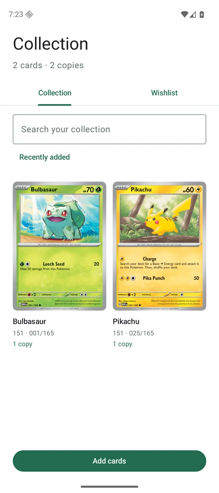

Independent by default
Open Android Studio or Xcode and get to work. Each app owns its build, dependencies, and native runtime.
Explore the architectureA calmer start for your next mobile app
A thoughtful monorepo for iOS and Android.
Shared direction. Independent apps. Room to make it yours.
Built independently. Designed to belong together.
01 / The foundation
Start with a clear home for your product, then let each platform do what it does best. Native projects, useful foundations, and a workflow you can actually follow.
Open Android Studio or Xcode and get to work. Each app owns its build, dependencies, and native runtime.
Explore the architectureKeep product behavior, architecture decisions, and component contracts in one easy-to-find place.
Meet the design librariesDev, staging, and production configurations. Platform checks, component tests, and retained CI evidence.
Follow the workflowProduct requirements travel together. Runtime code stays with its platform. Add layers when they have a real job to do.
Take a walk through the repo02 / Native by design
SwiftUI on iOS. Material 3 on Android. Shared component purposes, with the controls, typography, and interactions that feel at home on each device.
Track owned cards and a wishlist in two independent example apps. Seven bundled cards, saved locally, with the starter apps kept intact.

A real iOS walkthrough: find a card, save it to your wishlist, and add copies to your collection. Silent video with optional step captions.
03 / Your next chapter
Clone the repo, check your toolchain, and start on the platform you know. The other one will be right here.
Read the setup guide# A fresh start
git clone https://github.com/aldano-ark/reimagined-bassoon.git
cd reimagined-bassoon
./tooling/scripts/doctor ios
./tooling/scripts/build iosRequires macOS and Xcode. iOS prerequisites ↗
# A fresh start
git clone https://github.com/aldano-ark/reimagined-bassoon.git
cd reimagined-bassoon
./tooling/scripts/doctor android
./tooling/scripts/build androidRequires a compatible JDK and Android SDK. Android prerequisites ↗